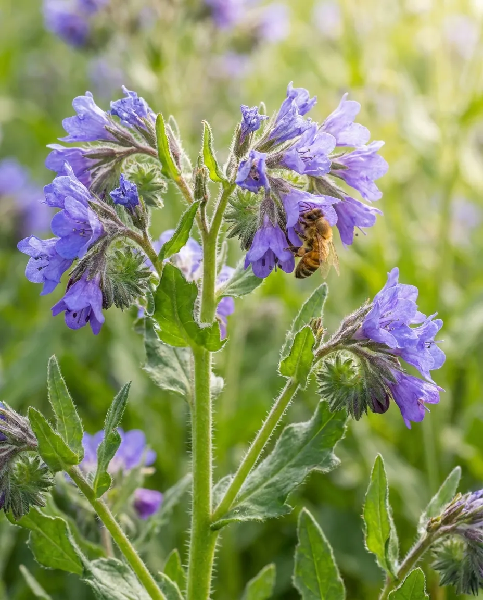

ФАЦЕЛИЯ
Однолетнее травянистое растение с ветвистым стеблем и синеватыми цветками. Зацветает через 30–45 дней после посева, цветёт 30–45 дней. Медопродуктивность — 150–300 кг/га. Фацелия неприхотлива к почве, морозоустойчива, выделяет нектар даже после заморозков. Мёд светлый, с зеленоватым оттенком, имеет нежный аромат и вкус.

Направления селекции:
- Повышение нектаро- и медопродуктивности. Селекционеры стремятся увеличить количество нектара, выделяемого цветками, и общую медопродуктивность культуры. Например, сорт «Алёшинская», выведенный в Федеральном научном центре пчеловодства, характеризуется увеличенной нектарной продуктивностью на 22% по сравнению с другими сортами. Это позволяет повысить доходность пчеловодства.
- Увеличение семенной продуктивности. Работа ведётся над созданием сортов с более высокой урожайностью семян. Сорт «Алёшинская» также отличается повышенной семенной продуктивностью — на 17% выше по сравнению с некоторыми аналогами. Это важно для обеспечения стабильного семеноводства и распространения культуры.
- Устойчивость к стрессовым условиям. Фацелия уже известна своей относительно низкой требовательностью к почвенно-климатическим условиям, но селекция направлена на дальнейшее повышение её устойчивости к засухе, низким температурам и другим неблагоприятным факторам. Это расширяет географию возделывания культуры.